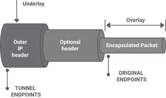
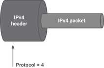
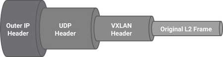
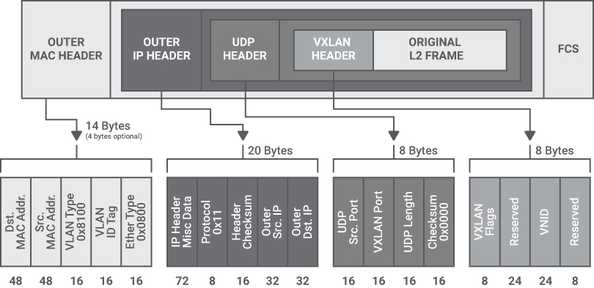
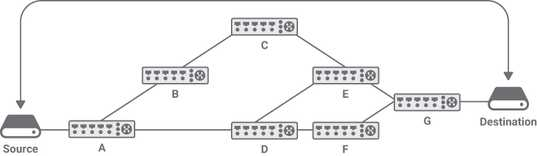

Various Routing & Packet Forwarding Techniques
Various Routing & Packet Forwarding Techniques
Table of contents
The core routing and packet forwarding haven’t changed for decades and it is not going to change for next decade also. But, it is going to evolve due to market needs, specially data centres. At the same time, Silicon capacity, CPU power, NIC bandwidth, all have increased significantly. Applications have evolved from monoliths to multi-tiered applications, using distributed databases with distributed microservices, creating a lot more demand for East-West network capacity and, more importantly, network services. Typically, the East-West traffic is 80 percent of overall traffic till today. Till now, various number of IP routing and forwarding techniques have been deployed in Data Center and Internet Service Provider.
Bridging and Routing
The Ethernet is only surviving technology at Layer 2, defined by IEEE 802.1. The packet forwarding technique at layer 2 is called Bridging, also called as Layer 2 forwarding. On the other hand, IP is only surviving technology at Layer 3, defined by IETF. The technique it uses to forward packets is called IP Routing/IP Forwarding/L3 Forwarding.
L2 Forwarding
The Ethernet packets have a straightforward structure that contains six fields: destination MAC address, source MAC address, 802.1Q tag, Ethertype (protocol inside the data field), data, and frame check sequence (FCS). The 802.1Q tag contains the VLAN identifier (VID) and the priority. Of these fields, the only ones used in L2 forwarding are the VID and the destination MAC address. These two are used as a key to search a MAC address table with an exact match technique. If the key is found, the table entry indicates where to forward the frame. If the key is missing, the frame is flooded to all the ports (except the incoming port) in an attempt to make the maximum effort to deliver the frame to its final destination. To avoid loops, spanning tree protocol is used.
L3 Forwarding
Layer 3 forwarding is different from L2 forwarding: if a packet needs to be sent across subnets, the destination IP address is searched in an IP routing table using a longest prefix match (LPM) technique.
100.1.0.0/16 – port 1 100.2.0.0/16 – port 2 100.1.1.0/24 – port 3
The /n indicates that only the first n bits from the left are significant in any matching.
If the LPM does not find a match in the forwarding table for the IP destination address, the packet is dropped. In L3 forwarding, time to live (TTL) is used to avoid temporary loops.
LPM can be done in software using a variety of data structures and algorithms. Linux uses a level-compressed trie (or LPC-trie) for IPv4, providing good performance with low memory usage. For IPv6, Linux uses a more traditional Patricia trie. LPM forwarding in HW is the most common implementation of layer 3 forwarding. There are a few different ways to accomplish LPM in hardware. All of them require performing a “ternary match”; that is, a match where some of the bits are “don’t care” (represented by the letter “X”). For example, the route 10.1.1.0/24 is encoded as 00001010 00000001 00000001 XXXXXXX.
For example, some commercial routers use a microcode implementation of Patricia trie. Others use a hardware structure called ternary content-addressable memory (TCAM) that supports ternary matches. Based on the scale requirements, TCAMs can take up significant silicon space and have high power consumption.
VRF
Virtual routing and forwarding (VRF) is a layer 3 network virtualization technology that permits multiple instances of a routing table to exist in a router and work simultaneously. This allows different kinds of traffic to be forwarded according to different routing tables. Each routing instance is independent of the others, thus supporting overlapping IP addresses without creating conflicts.
In VRF, each router participates in the virtual routing environment in a peer-based fashion; that is, each router selects the routing table according to some local criteria, the most common being the incoming interface (either physical or logical). The other options are VLAN ID or an MPLS label.
Overlays
An overlay network is a virtual network built on top of an underlay network; that is, a physical infrastructure. The underlay network’s primary responsibility is forwarding the overlay encapsulated packets (for example, VXLAN) across the underlay network in an efficient way using ECMP when available. The underlay provides a service to the overlay. In modern network designs, the underlay network is always an IP network (either IPv4 or IPv6), Example: MPLS, GRE, IP in IP, L2TP, and VXLAN. Normally, the encapsulation and decapsulation needs to be done in HW for better performance.
1. IP in IP
One of the first standards that deals with encapsulation of IPv4 in IPv4 is RFC 1853. Similarly IPv4 in IPv6, IPv6 in IPv4.
2. GRE
The goal was to be able to encapsulate a wide variety of network layer protocols inside virtual point-to-point links over an IP network. Although nowadays this feature is less relevant because the only surviving protocols are IPv4 and IPv6, it is still important, because with virtualization there is a need to carry layer 2 traffic inside a tunnel. Efforts such as Network Virtualization using Generic Routing Encapsulation (NVGRE/rfc7637) and L2 GRE try to satisfy this virtualization requirement.
3. VXLAN
VXLAN carries a VLAN across a routed network. It propagates l2 packets/domain over L3 network. This is required in Clos based datacentre network. Although VLANs have historically been associated with the spanning tree protocol, which provides a single path across a network, VXLAN can use the equal cost multi-path (ECMP) of the underlying network to offer more bandwidth.
The VXLAN standard is defined in RFC 7348 and the authors' list, showing that it is a concerted effort among router, NIC, and virtualization companies, indicating the strategic importance of this overlay.
VXLAN uses UDP encapsulation, and the destination UDP port is set to the well-known value of 4789. The source UDP port should be randomly set, creating entropy that can be used by routers to load balance the traffic among multiple parallel links.
In general, the encapsulating endpoint may set the UDP source port to a hash of the five-tuple of the inner IP header. In this way, all the packets belonging to a single flow will follow the same path, preventing out-of-order packets, but different flows may follow different paths. VXLAN is also used as a technology for encapsulating layer 3 unicast communication between application layers; this is evident in the newer revision of the VXLAN specification that allows for IP encapsulation within VXLAN natively. Finally, VXLAN encapsulation adds a Virtual Network ID (VNID) to the original L2 frame, a concept similar to a VLAN-ID, but with a much broader range of values, because the VNID field is 24 bits, compared to the VLAN-ID field that is only 12 bits.
The VXLAN encapsulation adds 50 bytes to the original layer 2 Ethernet frame, which needs to be considered in the context of the network underlay;
Segment Routing
Source routing is a technology known for decades in which the sender of the packet decides the path the packet should take to its destination. Segment routing (SR) is a form of source routing where the source node defines the forwarding path as an ordered list of “segments.” There are two kinds of Segment Routing:
- SR-MPLS, which is based on Multiprotocol Label Switching (MPLS)
- SRv6, which is based on IPv6
The underlying technology used by SR-MPLS is Multiprotocol Label Switching (MPLS), a routing technique that directs data from one node to the next based on “labels” rather than network addresses. Alternatively, SR can use an IPv6 data plane, as is the case in SRv6.
Segment routing divides the network into “segments” where each node and link could be assigned a segment identifier, or a SID, which is advertised by each node using extensions to standard routing protocols like IS-IS, OSPF and BGP, eliminating the need to run additional label distribution protocols such as MPLS LDP.
SR imposes no changes to the MPLS data plane. In SR the ordered list of segments is encoded as a stack of labels. The first segment to process is on the top of the stack. Upon completion of a segment processing, the segment is removed from the stack.
For example, in the absence of SR the routing between the Source and the Destination in is composed of two ECMPs: A - D - F - G and A - D - E - G (assuming all links have the same cost). In the presence of SR it is possible to forward the packet across other links. For example, if the source specifies a stack E/C/A, where A is the top of the stack, the packet is forwarded to A that pops its label, resulting in a stack containing E/C. Then A sends the packet to C, C will pop its label and forward the packet to E, which delivers it to its destination.
Segment routing offers the following benefits:
- Network slicing, a type of virtual networking architecture with the ability to express a forwarding policy to meet a specific application SLA (for example, latency, bandwidth)
- Traffic engineering
- Capability to define separate paths for disjoint services
- Better utilization of the installed infrastructure
- Stateless service chaining
- End-to-end policies
- Compatibility with IP and SDN
Forwarding in NIC
This is very new concept, adopted in cloud providers. The cloud server consist of large number of tenants, compromising large number routes and access control lists (ACL). Sometimes, this is difficult to implement this in host with traditional table lookups. Hence, some cloud providers decided to implement limited forwarding functionally in NIC. This is kind of flow based entries in NIC. The flow supports ipv4/ipv6 address, policy, filrewalls etc. With the advancement of more technologies with ipv6 addressing, it will be a challenge to maintain both features and cost. More complicated the features will be, bigger silicon and more power will be needed and cost will increase. This is one of the future trend gearing up for cloud data centers. This approach is implemented in Microsoft Azure.
References:
LEAVE A REPLY